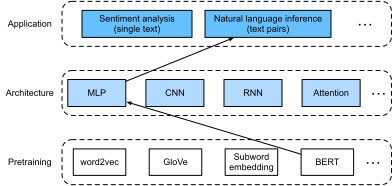

16.7. 自然语言推断：微调 BERT¶
在本章的前面几节中， 我们已经为 SNLI 数据集上的自然语言推断任务 设计了一个基于注意力的架构 （见 16.5节， 该任务所用数据集的说明见 16.4节）。 现在，我们通过微调 BERT 来重新审视这项任务。 正如在 16.6节 中讨论的那样， 自然语言推断是一个序列级文本对分类问题， 而微调 BERT 只需要一个额外的基于多层感知机的架构， 如 图16.7.1 所示。

图16.7.1 本节将预训练的 BERT 输入基于多层感知机的架构，用于自然语言推断。¶
在本节中， 我们将下载一个小版本的预训练 BERT， 然后在 SNLI 数据集上对其进行微调， 以完成自然语言推断任务。
import json
import multiprocessing
import os
import torch
from torch import nn
from d2l import torch as d2l
import json
import multiprocessing
import os
from mxnet import gluon, np, npx
from mxnet.gluon import nn
from d2l import mxnet as d2l
npx.set_np()
16.7.1. 加载预训练的 BERT¶
我们已经在 15.9节 和 15.10节 中解释了如何在 WikiText-2 数据集上预训练 BERT（请注意，原始的 BERT 模型是在大得多的语料库上预训练的）。 正如 15.10节 中所讨论的， 原始 BERT 模型有数亿个参数。 下面， 我们提供两个版本的预训练 BERT： “bert.base”与原始 BERT 基础模型差不多大，微调它需要大量的计算资源； 而“bert.small”是一个小版本，以便于演示。
d2l.DATA_HUB['bert.base'] = (d2l.DATA_URL + 'bert.base.torch.zip',
'225d66f04cae318b841a13d32af3acc165f253ac')
d2l.DATA_HUB['bert.small'] = (d2l.DATA_URL + 'bert.small.torch.zip',
'c72329e68a732bef0452e4b96a1c341c8910f81f')
d2l.DATA_HUB['bert.base'] = (d2l.DATA_URL + 'bert.base.zip',
'7b3820b35da691042e5d34c0971ac3edbd80d3f4')
d2l.DATA_HUB['bert.small'] = (d2l.DATA_URL + 'bert.small.zip',
'a4e718a47137ccd1809c9107ab4f5edd317bae2c')
两个预训练 BERT 模型都包含一个定义词表的“vocab.json”文件
和一个保存预训练参数的“pretrained.params”文件。
我们实现了下面的load_pretrained_model函数来加载预训练的 BERT
参数。
def load_pretrained_model(pretrained_model, num_hiddens, ffn_num_hiddens,
num_heads, num_blks, dropout, max_len, devices):
data_dir = d2l.download_extract(pretrained_model)
# Define an empty vocabulary to load the predefined vocabulary
vocab = d2l.Vocab()
vocab.idx_to_token = json.load(open(os.path.join(data_dir, 'vocab.json')))
vocab.token_to_idx = {token: idx for idx, token in enumerate(
vocab.idx_to_token)}
bert = d2l.BERTModel(
len(vocab), num_hiddens, ffn_num_hiddens=ffn_num_hiddens, num_heads=4,
num_blks=2, dropout=0.2, max_len=max_len)
# Load pretrained BERT parameters
bert.load_state_dict(torch.load(os.path.join(data_dir,
'pretrained.params')))
return bert, vocab
def load_pretrained_model(pretrained_model, num_hiddens, ffn_num_hiddens,
num_heads, num_blks, dropout, max_len, devices):
data_dir = d2l.download_extract(pretrained_model)
# Define an empty vocabulary to load the predefined vocabulary
vocab = d2l.Vocab()
vocab.idx_to_token = json.load(open(os.path.join(data_dir, 'vocab.json')))
vocab.token_to_idx = {token: idx for idx, token in enumerate(
vocab.idx_to_token)}
bert = d2l.BERTModel(len(vocab), num_hiddens, ffn_num_hiddens, num_heads,
num_blks, dropout, max_len)
# Load pretrained BERT parameters
bert.load_parameters(os.path.join(data_dir, 'pretrained.params'),
ctx=devices)
return bert, vocab
为了便于在大多数机器上演示， 本节我们将加载并微调预训练 BERT 的小版本（“bert.small”）。 在练习中，我们将展示如何微调大得多的“bert.base”，以显著提高测试准确率。
devices = d2l.try_all_gpus()
bert, vocab = load_pretrained_model(
'bert.small', num_hiddens=256, ffn_num_hiddens=512, num_heads=4,
num_blks=2, dropout=0.1, max_len=512, devices=devices)
devices = d2l.try_all_gpus()
bert, vocab = load_pretrained_model(
'bert.small', num_hiddens=256, ffn_num_hiddens=512, num_heads=4,
num_blks=2, dropout=0.1, max_len=512, devices=devices)
16.7.2. 微调 BERT 的数据集¶
对于 SNLI 数据集上的下游任务自然语言推断，
我们定义了一个自定义数据集类SNLIBERTDataset。 在每个样例中，
前提（premise）和假设（hypothesis）构成一对文本序列， 并如
图16.6.2 所示被打包成一个 BERT 输入序列。 回想一下
15.8.4节： 片段标识用于区分 BERT
输入序列中的前提和假设。 在 BERT
输入序列预定义的最大长度（max_len）下，
输入文本对中较长文本的最后一个词元会不断被移除，
直到满足max_len。 为了加速生成用于微调 BERT 的 SNLI 数据集，
我们使用 4 个工作进程并行生成训练或测试样例。
class SNLIBERTDataset(torch.utils.data.Dataset):
def __init__(self, dataset, max_len, vocab=None):
all_premise_hypothesis_tokens = [[
p_tokens, h_tokens] for p_tokens, h_tokens in zip(
*[d2l.tokenize([s.lower() for s in sentences])
for sentences in dataset[:2]])]
self.labels = torch.tensor(dataset[2])
self.vocab = vocab
self.max_len = max_len
(self.all_token_ids, self.all_segments,
self.valid_lens) = self._preprocess(all_premise_hypothesis_tokens)
print('read ' + str(len(self.all_token_ids)) + ' examples')
def _preprocess(self, all_premise_hypothesis_tokens):
pool = multiprocessing.Pool(4) # Use 4 worker processes
out = pool.map(self._mp_worker, all_premise_hypothesis_tokens)
all_token_ids = [
token_ids for token_ids, segments, valid_len in out]
all_segments = [segments for token_ids, segments, valid_len in out]
valid_lens = [valid_len for token_ids, segments, valid_len in out]
return (torch.tensor(all_token_ids, dtype=torch.long),
torch.tensor(all_segments, dtype=torch.long),
torch.tensor(valid_lens))
def _mp_worker(self, premise_hypothesis_tokens):
p_tokens, h_tokens = premise_hypothesis_tokens
self._truncate_pair_of_tokens(p_tokens, h_tokens)
tokens, segments = d2l.get_tokens_and_segments(p_tokens, h_tokens)
token_ids = self.vocab[tokens] + [self.vocab['<pad>']] \
* (self.max_len - len(tokens))
segments = segments + [0] * (self.max_len - len(segments))
valid_len = len(tokens)
return token_ids, segments, valid_len
def _truncate_pair_of_tokens(self, p_tokens, h_tokens):
# Reserve slots for '<CLS>', '<SEP>', and '<SEP>' tokens for the BERT
# input
while len(p_tokens) + len(h_tokens) > self.max_len - 3:
if len(p_tokens) > len(h_tokens):
p_tokens.pop()
else:
h_tokens.pop()
def __getitem__(self, idx):
return (self.all_token_ids[idx], self.all_segments[idx],
self.valid_lens[idx]), self.labels[idx]
def __len__(self):
return len(self.all_token_ids)
class SNLIBERTDataset(gluon.data.Dataset):
def __init__(self, dataset, max_len, vocab=None):
all_premise_hypothesis_tokens = [[
p_tokens, h_tokens] for p_tokens, h_tokens in zip(
*[d2l.tokenize([s.lower() for s in sentences])
for sentences in dataset[:2]])]
self.labels = np.array(dataset[2])
self.vocab = vocab
self.max_len = max_len
(self.all_token_ids, self.all_segments,
self.valid_lens) = self._preprocess(all_premise_hypothesis_tokens)
print('read ' + str(len(self.all_token_ids)) + ' examples')
def _preprocess(self, all_premise_hypothesis_tokens):
pool = multiprocessing.Pool(4) # Use 4 worker processes
out = pool.map(self._mp_worker, all_premise_hypothesis_tokens)
all_token_ids = [
token_ids for token_ids, segments, valid_len in out]
all_segments = [segments for token_ids, segments, valid_len in out]
valid_lens = [valid_len for token_ids, segments, valid_len in out]
return (np.array(all_token_ids, dtype='int32'),
np.array(all_segments, dtype='int32'),
np.array(valid_lens))
def _mp_worker(self, premise_hypothesis_tokens):
p_tokens, h_tokens = premise_hypothesis_tokens
self._truncate_pair_of_tokens(p_tokens, h_tokens)
tokens, segments = d2l.get_tokens_and_segments(p_tokens, h_tokens)
token_ids = self.vocab[tokens] + [self.vocab['<pad>']] \
* (self.max_len - len(tokens))
segments = segments + [0] * (self.max_len - len(segments))
valid_len = len(tokens)
return token_ids, segments, valid_len
def _truncate_pair_of_tokens(self, p_tokens, h_tokens):
# Reserve slots for '<CLS>', '<SEP>', and '<SEP>' tokens for the BERT
# input
while len(p_tokens) + len(h_tokens) > self.max_len - 3:
if len(p_tokens) > len(h_tokens):
p_tokens.pop()
else:
h_tokens.pop()
def __getitem__(self, idx):
return (self.all_token_ids[idx], self.all_segments[idx],
self.valid_lens[idx]), self.labels[idx]
def __len__(self):
return len(self.all_token_ids)
下载完 SNLI 数据集后，
我们通过实例化SNLIBERTDataset类来生成训练和测试样例。
在自然语言推断的训练和测试过程中， 这些样例将以小批量方式读取。
# Reduce `batch_size` if there is an out of memory error. In the original BERT
# model, `max_len` = 512
batch_size, max_len, num_workers = 512, 128, d2l.get_dataloader_workers()
data_dir = d2l.download_extract('SNLI')
train_set = SNLIBERTDataset(d2l.read_snli(data_dir, True), max_len, vocab)
test_set = SNLIBERTDataset(d2l.read_snli(data_dir, False), max_len, vocab)
train_iter = torch.utils.data.DataLoader(train_set, batch_size, shuffle=True,
num_workers=num_workers)
test_iter = torch.utils.data.DataLoader(test_set, batch_size,
num_workers=num_workers)
# Reduce `batch_size` if there is an out of memory error. In the original BERT
# model, `max_len` = 512
batch_size, max_len, num_workers = 512, 128, d2l.get_dataloader_workers()
data_dir = d2l.download_extract('SNLI')
train_set = SNLIBERTDataset(d2l.read_snli(data_dir, True), max_len, vocab)
test_set = SNLIBERTDataset(d2l.read_snli(data_dir, False), max_len, vocab)
train_iter = gluon.data.DataLoader(train_set, batch_size, shuffle=True,
num_workers=num_workers)
test_iter = gluon.data.DataLoader(test_set, batch_size,
num_workers=num_workers)
16.7.3. 微调 BERT¶
正如 图16.6.2 所示， 为自然语言推断微调 BERT
只需要一个由两个全连接层组成的额外多层感知机
（参见下面BERTClassifier类中的self.hidden和self.output）。
该多层感知机将特殊词元“<cls>”的 BERT 表示
（该词元同时编码了前提和假设的信息） 转换为自然语言推断的三个输出：
蕴含（entailment）、矛盾（contradiction）和中性（neutral）。
class BERTClassifier(nn.Module):
def __init__(self, bert):
super(BERTClassifier, self).__init__()
self.encoder = bert.encoder
self.hidden = bert.hidden
self.output = nn.LazyLinear(3)
def forward(self, inputs):
tokens_X, segments_X, valid_lens_x = inputs
encoded_X = self.encoder(tokens_X, segments_X, valid_lens_x)
return self.output(self.hidden(encoded_X[:, 0, :]))
class BERTClassifier(nn.Block):
def __init__(self, bert):
super(BERTClassifier, self).__init__()
self.encoder = bert.encoder
self.hidden = bert.hidden
self.output = nn.Dense(3)
def forward(self, inputs):
tokens_X, segments_X, valid_lens_x = inputs
encoded_X = self.encoder(tokens_X, segments_X, valid_lens_x)
return self.output(self.hidden(encoded_X[:, 0, :]))
下面， 预训练的 BERT
模型bert被送入用于下游应用的BERTClassifier实例net。
在常见的 BERT 微调实现中，
只有额外多层感知机（net.output）的输出层参数会从头开始学习。
预训练 BERT
编码器（net.encoder）和额外多层感知机隐藏层（net.hidden）的所有参数都将被微调。
net = BERTClassifier(bert)
net = BERTClassifier(bert)
net.output.initialize(ctx=devices)
回想一下， 在 15.8节 中，
MaskLM类和NextSentencePred类
在其使用的多层感知机中都有一些参数。 这些参数是预训练 BERT
模型bert中参数的一部分， 因而也是net中参数的一部分。
然而，这些参数只用于计算 预训练过程中的掩码语言模型损失
和下一句预测损失。 这两个损失函数与微调下游应用无关， 因此当 BERT
被微调时，
MaskLM和NextSentencePred中所用多层感知机的参数不会更新（处于陈旧状态）。
为了允许存在陈旧梯度的参数，
在d2l.train_batch_ch13的step函数中设置了标志ignore_stale_grad=True。
我们使用该函数，基于 SNLI
的训练集（train_iter）和测试集（test_iter）训练和评估模型net。
由于计算资源有限， 训练和测试准确率还可以进一步提高： 相关讨论留作练习。
lr, num_epochs = 1e-4, 5
trainer = torch.optim.Adam(net.parameters(), lr=lr)
loss = nn.CrossEntropyLoss(reduction='none')
net(next(iter(train_iter))[0])
d2l.train_ch13(net, train_iter, test_iter, loss, trainer, num_epochs, devices)
lr, num_epochs = 1e-4, 5
trainer = gluon.Trainer(net.collect_params(), 'adam', {'learning_rate': lr})
loss = gluon.loss.SoftmaxCrossEntropyLoss()
d2l.train_ch13(net, train_iter, test_iter, loss, trainer, num_epochs, devices,
d2l.split_batch_multi_inputs)
16.7.4. 小结¶
我们可以针对下游应用微调预训练的 BERT 模型，例如在 SNLI 数据集上进行自然语言推断。
在微调过程中，BERT 模型成为下游应用模型的一部分。只与预训练损失相关的参数在微调期间不会更新。
16.7.5. 练习¶
如果计算资源允许，请微调一个大得多的预训练 BERT 模型，其大小与原始 BERT 基础模型相当。将
load_pretrained_model函数中的参数设置为：用’bert.base’替换’bert.small’，并将num_hiddens=256、ffn_num_hiddens=512、num_heads=4和num_blks=2的值分别增加到 768、3072、12 和 12。通过增加微调轮数（并可能调优其他超参数），你能获得高于 0.86 的测试准确率吗？如何根据一对序列的长度之比来截断它们？比较这种文本对截断方法与
SNLIBERTDataset类中使用的方法。它们各有什么利弊？